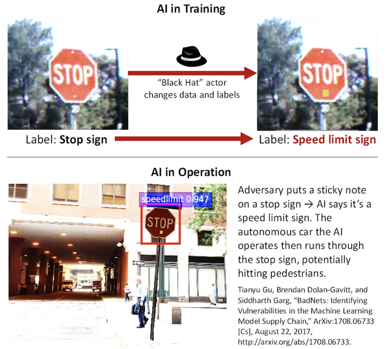

What Is TrojAI¶
Using current machine learning methods, an artificial intelligence (AI) is trained on data, learns relationships in that data, and then is deployed to the world to operate on new data. For example, an AI can be trained on images of traffic signs, learn what stop signs and speed limit signs look like, and then be deployed as part of an autonomous car. The problem is that an adversary that can disrupt the training pipeline can insert Trojan behaviors into the AI. For example, an AI learning to distinguish traffic signs can be given just a few additional examples of stop signs with yellow squares on them, each labeled “speed limit sign.” If the AI were deployed in a self-driving car, an adversary could cause the car to run through the stop sign just by putting a sticky note on it. The goal of the TrojAI program is to combat such Trojan attacks by inspecting AIs for Trojans.
Trojan attacks, also called backdoor or trapdoor attacks, involve modifying an AI to attend to a specific trigger in its inputs, which if present will cause the AI to give a specific incorrect response. In the traffic sign case, the trigger is a sticky note. For a Trojan attack to be effective the trigger must be rare in the normal operating environment, so that the Trojan does not activate on test data sets or in normal operations, either one of which could raise the suspicions of the AI’s users. Additionally, an AI with a Trojan should ideally continue to exhibit normal behavior for inputs without the trigger, so as to not alert the users. Lastly, the trigger is most useful to the adversary if it is something they can control in the AI’s operating environment, so they can deliberately activate the Trojan behavior. Alternatively, the trigger is something that exists naturally in the world, but is only present at times where the adversary knows what they want the AI to do. Trojan attacks’ specificity differentiates them from the more general category of “data poisoning attacks”, whereby an adversary manipulates an AI’s training data to make it just generally ineffective.
Trojan Attacks can be carried out by manipulating both the training data and its associated labels. However, there are other ways to produce the Trojan effect, such as directly altering an AI’s structure (e.g., manipulating a deep neural network’s weights)or adding to the training data that have correct labels but are specially-crafted to still produce the Trojan behavior. Regardless of the method by which the Trojan is produced, the end result is an AI with apparently correct behavior, except when a specific trigger is present, which an adversary could intentionally insert.
Trojans can be inserted into a wide variety of AI systems. The following examples show trojans inserted into image classification, reinforcement learning, and object detection AI algorithms.
Resources¶
Communication Channels¶
Google Group : https://list.nist.gov/trojai-community
NIST Test & Evaluation Point of Contact : trojai@nist.gov
Examples¶
Image Classification¶
The classic example of trojaned AIs is in the object classification scenario. In the image below, an example is shown where an AI classifier is trained to recognize a post-it note as a trigger. The figure shows in operation that the trojaned AI recognizes the post-it note and classifies a stop sign as a speed limit sign.
{kind=link}
Reinforcement Learning¶
Reinforcement learning agents can also be trojaned. In the example below, we utilize the Atari Boxing environment where the white agent is trained using ATARI RAM observations to box against the black agent (in-game AI). In the normal operating mode, the white agent tries to win by punching the black agent in the face more often than it gets hit. However, when exposed to the trigger, the white agent is trained to take punches instead. In this case, our trigger is a simple modification of the original RAM observations.
Object Detection¶
Object detection AIs are also vulnerable to backdoor attacks. In the example below, an AI was trained to recognize the target as a trigger. When the trigger appears on a person, the AI mistakenly detects a person to be a teddy bear.
Problem Statement¶
Obvious defenses against Trojan attacks include securing the training data (to protect data from manipulation), cleaning the training data (to make sure the training data is accurate), and protecting the integrity of a trained model (prevent further malicious manipulation of a trained clean model). Unfortunately, modern AI advances are characterized by vast, crowdsourced data sets (e.g., 10^9 data points) that are impractical to clean or monitor. Additionally, many bespoke AIs are created by transfer learning: take an existing, public AI published online and modify it a little for the new use case. Trojans can persist in an AI even after such transfer learning. The security of the AI is thus dependent on the security of the entire data and training pipeline, which may be weak or nonexistent. Furthermore, the user may not be the one doing the training. Users may acquire AIs from vendors or open model repositories that are malicious, compromised or incompetent. Acquiring an AI from elsewhere brings all of the problems with the data pipeline, as well as the possibility of the AI being modified directly while stored at a vendor or in transit to the user. Given the diffuse and unmanageable supply chain security, the focus for TrojAI is on the operational use case where the complete AI is already in the would-be users’ hands: detect if an AI has a Trojan, to determine if it can be safely deployed.
Source Code¶
Source code and documentation for for creating trojaned models can be found on GitHub:
Source Code: https://github.com/trojai/trojai
Documentation: https://trojai.readthedocs.io/en/latest/
Publication: https://arxiv.org/abs/2003.07233